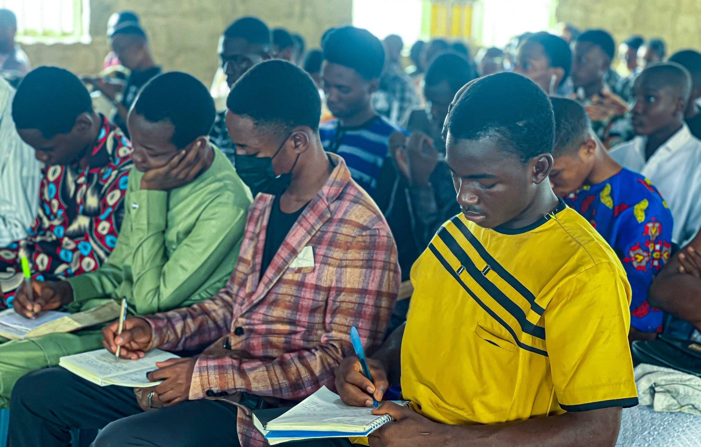
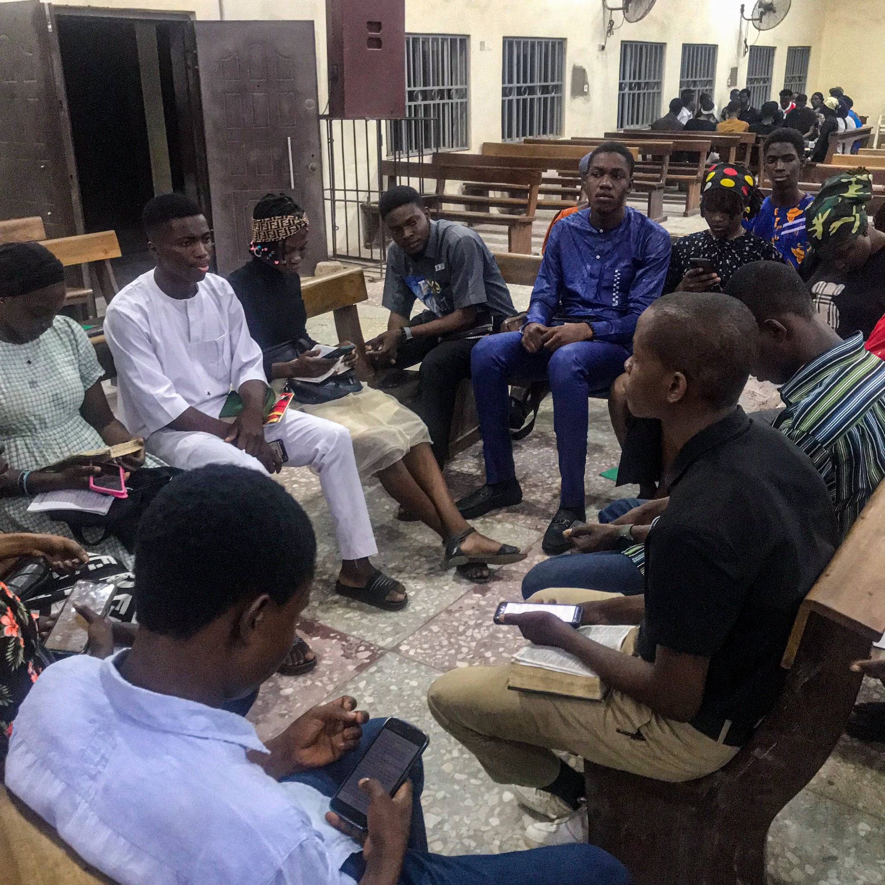
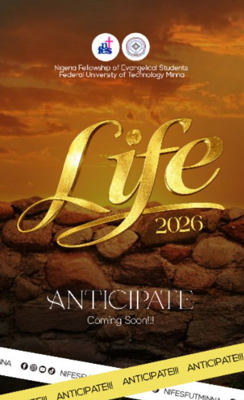
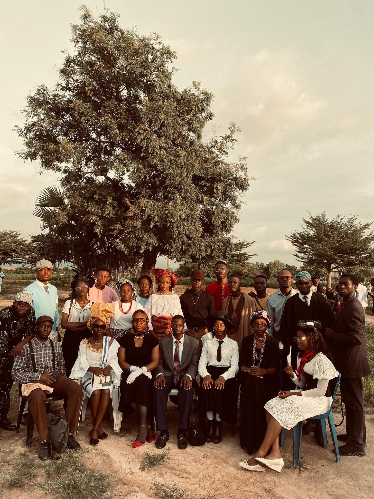
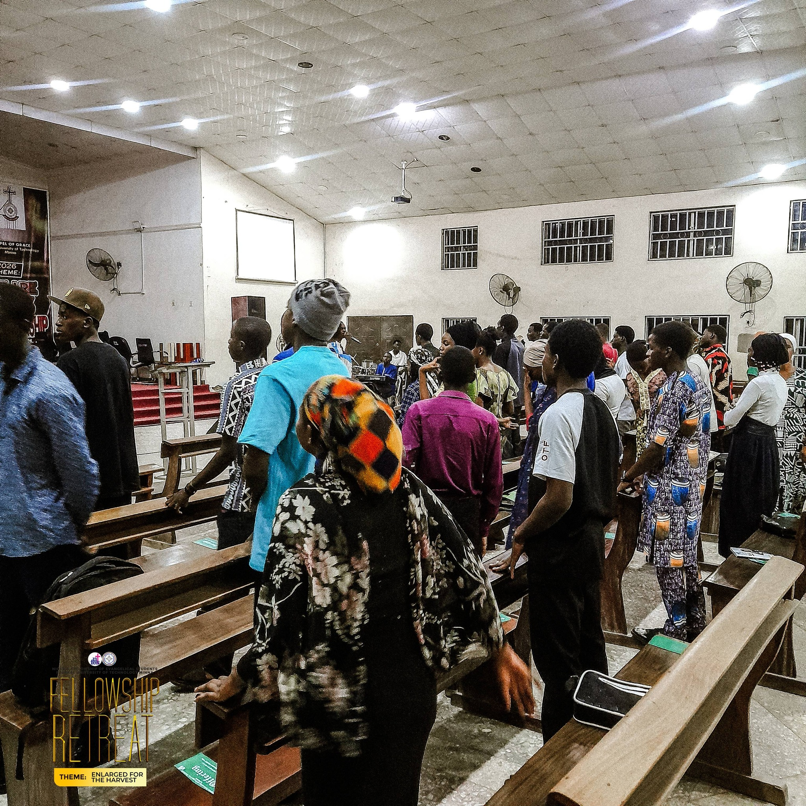
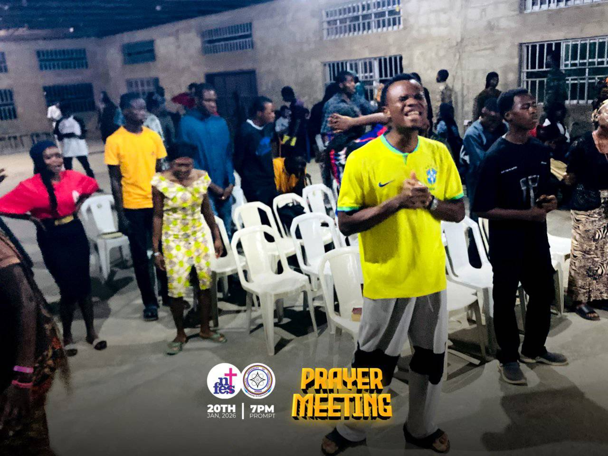
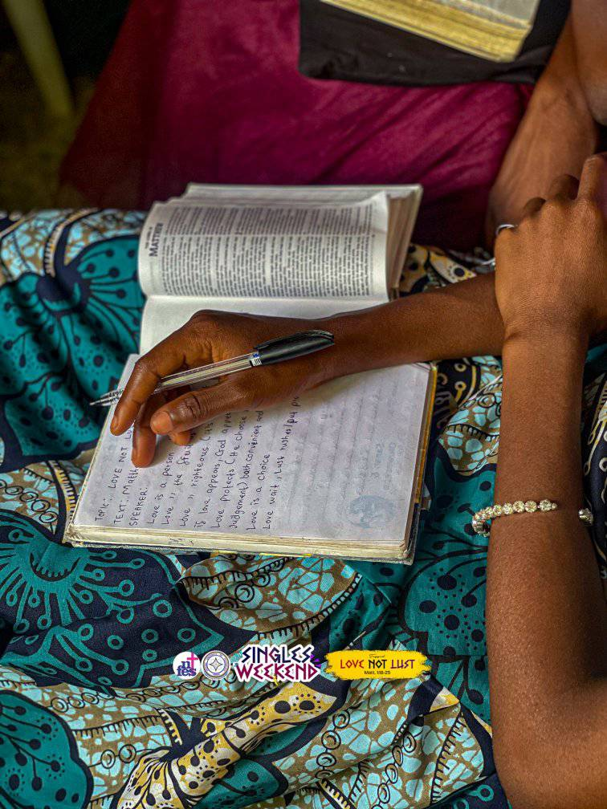

NIFES At A Glance
The Nigeria Fellowship of Evangelical Students (NIFES) is a national student's movement in Nigeria's post-secondary institutions committed to reaching students with the gospel of our Lord Jesus Christ with the ultimate aim of making disciples of Jesus Christ among the students. NIFES is evangelical, indigenous, non-denominational and inter-denominational Fellowship.
NIFES came into existence in 1968 as a result of Evangelical Christian witness in some post-secondary institutions in the early fifties. Students who have benefited from the ministry of Christian groups in their secondary schools became involved with Christian lecturers who invited them for prayer, Bible studies and squash parties, particularly at the University of Ibadan. Before long, more groups emerged leading to the formal inauguration of NIFES on the 31st of August, 1968 at a conference held in Ilorin.
Today, NIFES member groups number over 375 with well over 31,000 students involved. Through Bible studies, prayer meetings, and biblical discipleship, NIFES challenges, motivates, and mobilizes students to fulfill the Great Commission (Matthew 28:18-20).
NIFES is inter-denominational and non-denominational in nature (i.e. membership is open to people from various denominations and NIFES does not align herself with any particular denomination, church, or group's doctrine). She is a member movement of the International Fellowship of Evangelical Student (IFES). NIFES recognizes and identifies with the witness of the Church in Nigeria and throughout the world.
NIFES Core Values
Biblical Authority
We hold Scripture as the final authority for faith and practice, grounding all we do in God's Word.
Evangelism
We are committed to sharing the gospel with every student, calling them to faith in Jesus Christ.
Discipleship
We invest in growing believers through intentional mentoring, Bible study, and spiritual disciplines.
Missions
We mobilize students for local and global missions, raising awareness for God's global purpose.
Leadership
We develop godly student leaders equipped to serve the Church and transform society.
Community
We foster authentic relationships, mutual care, and spiritual growth in a welcoming fellowship family.
Our Vision & Mission

Our Vision
To be a movement of Christ-like students in Nigeria's tertiary institutions transforming the campus, and society upon graduation.

Our Mission
NIFES exists to reach out to students through evangelism and discipleship training, to mobilize them upon graduation to impact the campus, church and society with godly values.
Our Aims and Objectives
Primary Aim
To win and disciple Students for Jesus Christ
Our Objectives
- To equip Christian students for evangelism especially amongst fellow students on campuses.
- To nurture Christian students through personal discipleship thereby enabling them to grow into maturity in Christ.
- To mobilize students for missions and create mission awareness amongst Christian students, Staff and associates.
- To train students in biblical leadership for godly roles in the Church and society.
- To prepare and equip Christian students towards meeting the cardinal objectives of NIFES as provided for in NIFES Constitution.
- To promote and support Christian literary work and Christian library services.
- To do any other thing that, in the opinion of the Board of Trustees and/or Governing Council will advance the Commission of the Lord Jesus Christ.
What Distinctively Shapes NIFES
Our fellowship is defined by these key characteristics.
Evangelical
We believe in the Holy Scriptures, the Bible as the inspired Word of God and seek to live in conformity to it.
Interdenominational
We are not a church and do not align with any particular denomination group. We however, recognize and identify with the witness of local Churches and serve them by reaching out to students while on campus. We are enriched by the diverse traditions of various denominational experiences.
Indigenous
We are an autonomous, national movement within Nigeria. While we have affiliation and relationship with similar movements worldwide, we are self-governing, self-propagating and self-supporting.
Non-Denominational
Membership is open to people from various denominations and NIFES does not align herself with any particular denomination, church, or group's doctrine. We provide a forum for worship and service sensitive to the diverse backgrounds of our student members.
Our Units
These are the teams that help NIFES FUTMinna feel like home, grow faith, and make campus life more meaningful.
Bible Study Unit
Helps students understand the Bible better through study time, simple discussions, and practical lessons for everyday life.

Evangelism Unit
Shares the gospel with students on campus through outreach, friendly conversations, and soul-winning events.

Publicity/Media Unit
Keeps everyone updated with announcements, posters, social media posts, and photos from fellowship programs.

Follow Up Unit
Welcomes first-time guests and new members, checks on them, and helps them settle into fellowship with ease.

The Lord's Habitation Choir
Leads the fellowship in worship through songs, choruses, and special ministrations that draw hearts to God.

Drama Unit
Uses drama, skits, and creative presentations to share Bible truths in a fun and easy-to-understand way.

Technical Unit
Helps meetings run smoothly by handling sound, visuals, microphones, and other technical support.

Ushering Unit
Greets members and guests, helps with seating, and makes sure everyone feels welcome and comfortable.

Prayer Unit
Stands in prayer for the fellowship, its members, and the campus, asking God for help, growth, and revival.